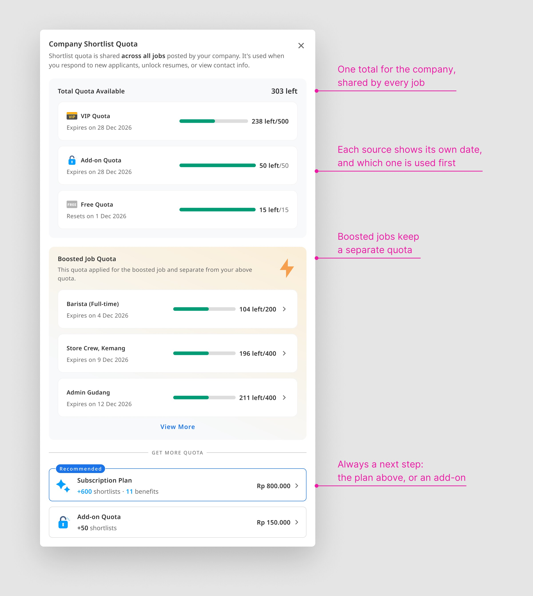
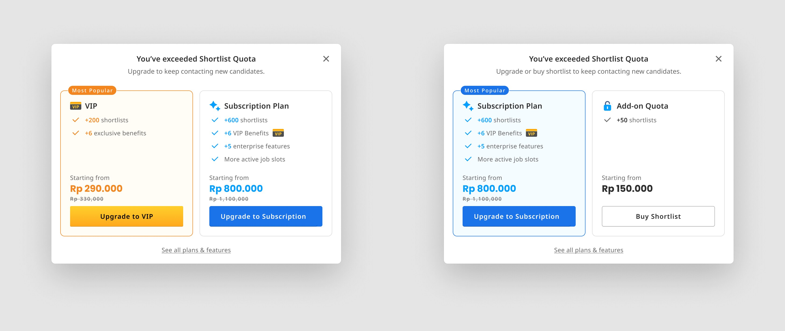

Turning a Usage Limit into a Reason to Upgrade
Finding the Shortlist Limit That Works
10 min read
On Glints, employers review applicants for free. They pay when they want to reach someone: to start a chat, see contact details or open a resume. We call that a shortlist, and the limit on shortlists is how the marketplace makes money.
I led the employer-side design with the monetization PMs, to make the limit feel clear and fair, so that reaching it felt like a natural moment to upgrade, not a punishment.
The old limit was set per job, so when employers ran out, they could simply post the same job again, which made reposting cheaper than paying. We moved the limit to the company, first as a daily limit in a pilot and then as a monthly quota, both showing employers how much they have left and letting them buy more right where they run out. In the end, what made the difference was the timing.
A Limit Employers Could Step Around
The per-job limit was simple to explain, and just as simple to get around.
On paper, a limit per job looked fair, because a company hiring for more roles got more room. In practice, every new job came with a fresh allowance, so when employers ran out, they posted the same job again instead of thinking about a plan. In the control group of our 2026 test, about one in five jobs looked like a duplicate of a role the company already had open.
The first fix made it worse in a different way. In September 2025, a company-wide limit was added on top as a fraud control, with no change to the interface. Paying customers hit a wall they couldn't see, Sales couldn't explain how it reset, and within weeks it was loosened again. That set the design problem: close the loophole, but make the limit something employers can see and plan around.
The goal: a limit employers can see, understand and act on, before and at the wall.
Experiment 1: A Daily Limit
It closed the loophole and lifted buying for a few weeks, then taught employers to wait.
To close the loophole, we counted shortlists for the whole company instead of each job, and tested it first as a daily limit in one region, Central Java.
The old paywall wasn't built for this. Every employer saw the same "Upgrade to VIP" message with the per-job rule in one line, and choosing a plan and paying happened on another page, one more step away from the candidate they wanted.

Before: one wall for every employer, and the upgrade happens somewhere else.
Employers hit the limit right when they want to reach a candidate, which is the best moment to offer more. Every extra step, like another page or a list of plans to compare, gives that intent time to fade, so the wall should suggest the one package that fits and let them pay right there. Other hiring apps we looked at work the same way.
My first direction still showed every plan side by side, then sent employers to a separate purchase page. It was complete, but it turned the moment of need into a comparison task.

After: the reason, the plan that fits and the payment, in one modal over the candidate list.
Employers shouldn't find out about the limit only when the wall stops them, so they also needed a place to check it at any time. Your Benefits in the account menu shows what their plan allows, how much they've used today and how to get a higher limit, so the wall never comes as a surprise.

Your Benefits for a free employer. VIP and subscription employers see the same view with their own limits.
In the pilot, the wall appeared wherever employers reached out to a candidate: from the candidate table, the profile or the chat.
At first, it worked. In the first weeks, the share of free employers who hit the limit in a week rose from 22% to 38%, and the share who bought on the same day rose from 3% to 10%. One HR user even said they liked pacing their screening day by day.
But the daily limit had a catch. Tomorrow was never far away, so many employers simply waited for the next day instead of paying, and by February, self-serve billings in the region had dropped 39% from January. We tried smaller shortlist packs to make buying easier, but they sold little, so in May 2026 we rolled the pilot back.
The wall worked. The clock didn't. A limit that resets every day teaches people to wait.
Experiment 2: A Monthly Quota
Keep one limit for the company, give it a longer reset, and show the price right at the wall.
For the monthly quota, we kept one limit for the whole company and changed two things. The first was the reset. A day was too easy to wait out, but if employers run out in the second week of a month, they have to wait weeks, which is a real cost when they're hiring.
The longer reset also made it possible to combine plans into one quota. The free allowance, VIP, subscriptions and add-ons all add to the same quota, each with its own expiry, while boosted jobs keep their own. This way, Glints can sell new package sizes without creating a new limit every time.
The second was the wall itself. Before, it only warned employers that they had hit the limit and pointed them to upgrade, with the packages and prices one step away. Now the wall shows them right away, so employers can compare and decide without leaving the candidate they were about to contact.
Reset Monthly, Not Daily
A day was too easy to wait out.
Show the Price at the Wall
Employers can decide on the spot, without leaving to find the price.
The monthly quota also reached further into the product. The candidate table, profile and chat show the quota or an upgrade panel in place. The pilot's Your Benefits became a full breakdown of the stack, and the plans page now sells add-ons and boosts next to VIP and subscriptions.
With quota now stacking from several plans, employers need a clear way to understand it on their own. The old Your Benefits page was too vague for that, so I turned it into a dedicated quota tracker, with one total and every source and its expiry date underneath. It sits right above the candidate table, where employers shortlist, and the first time they see it, a short tooltip explains what changed.

Quota details for a VIP employer. A free employer sees the same layout, with VIP as the recommended next step.

The quota above the candidate table, with the tooltip employers see once.
The wall also changes depending on who hits it. Free employers see what VIP gives them, VIP employers see a bigger plan or a small add-on, and customers on Sales-managed plans are sent straight to their account team.

The same moment for a free employer (left) and a VIP employer (right).
This time the results held up. In the A/B test, about as many free employers hit the limit as with the per-job version (38% vs 36%), but almost twice as many bought after hitting it (36% vs 20%). Billings per company also went up about 9%, though we treat that as directional because the two groups weren't fully even before the test.
Free companies in the monthly quota A/B test, about 4,700 per group, 1 Oct to 24 Nov 2026.
Same principles, longer clock. Once waiting cost something, paying became the easier choice.
The Trade-off: More Buyers, Fewer Jobs
We watched this from the start, because in a marketplace, a gain on one side usually costs the other.
Employers in the monthly test posted 36% fewer jobs, even after removing duplicates, and shortlisted about a third fewer candidates. About the same share still shortlisted at least once, so employers were posting fewer jobs, not leaving Glints. Candidates felt it too, with fewer jobs getting a shortlist within a week (64% vs 79%).
Why the Rest Didn't Buy
After launch, we also interviewed employers who hit the monthly limit but didn't buy, to understand their intentions and the reasons behind their decision.
The rule wasn't clear. Some of them were existing employers who were used to the old limit per job, so they still expected each job to come with its own shortlists.
The person who hits the limit is often not the one who pays. Most of them needed approval from a manager or the owner, and what held them back was making the case for it, not the price itself. Even a recruiter who pays with their own money chose not to buy more.
"Still too expensive, because I'd have to spend money again."
A freelance recruiter at a staffing agency, translated from Bahasa IndonesiaThe real competitor is a free workaround. When they hit the limit, they went back to channels they already had, like social media job groups or their own HR team, which cost them time instead of money. And since one monthly size can't fit both a staffing agency and a small business that hires a few times a year, the reset simply brought them back each month without changing their decision.
The wall came at the right time. But it often reached the wrong person, and one size didn't fit every team.
What I'd Design Next
Keep the limit, but make it clearer and fit it to how each team hires.
The next step is to keep the limit but make it easier to understand and act on, by explaining the change clearly to employers who still think in jobs, and by helping the recruiter who hits the wall make the case to whoever approves the budget.
The offer should also follow how each team hires, with more room for companies that post a lot and a smaller, shorter option for teams that only hire now and then. And it has to stay balanced with the candidate side, because if the limit is too tight, fewer candidates get shortlisted, and that hurts the experience for the whole marketplace.
Reflections
- The reset timing shapes behavior. With a daily limit, employers simply waited until the next day. With a monthly one, waiting cost too much, so more of them paid. The timing mattered as much as the screens.
- The limit is the best place to sell. Employers hit it right when they want to reach more candidates, so that's where the offer belongs. And the offer should fit who they are: VIP for a free employer, a bigger plan or an add-on for a VIP.
- Monetization is a marketplace decision. Every gain on one side has a cost on the other, so we measured both from the start.
Built with the monetization PMs, who set the model and ran the experiments; our data analyst; the employer web engineers; Commercial, who owned pricing and quota sizes; and everyone who helped with the interviews after launch.